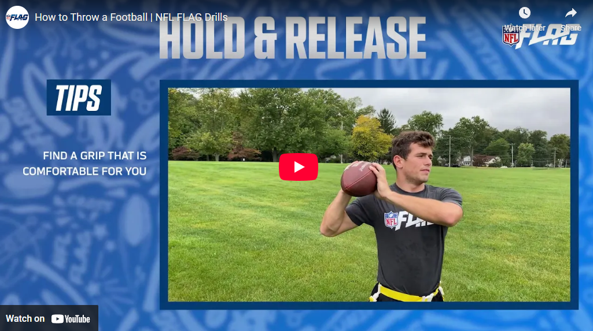

Quarterback Drills
Author: Coach Kyle | Created: June 02, 2025
Quarterback play is about more than just throwing a football. It's about leadership, timing, footwork, and decision-making. These drills focus on the fundamentals that help develop confident, skilled QBs at the youth level.
Tom Brady - How to Throw
A solid breakdown of basic QB drills covering footwork, throwing on the run, and pocket movement.
Deshaun Watson - QB Footwork
Improve your footwork and throwing mechanics with these professional drills.

Russell Wilson - Pocket Presence
Focus on improving pocket presence, release, and footwork with Russell Wilson's drills.

First Down Training - 10 Best Youth QB Drills
A collection of the 10 best drills specifically designed for youth quarterbacks.
10 Drills To Be A Great QB (2025)
Modern drills to help you become a complete quarterback in today's game.
NFL Flag - Throwing Fundamentals
Fundamentals of throwing a football from the NFL Flag program.

NFL Flag - QB Drills
Comprehensive quarterback drills focused on timing and mechanics.

Youth QB Drills & Mechanics
Extra video resources to help reinforce technique and game awareness.
How to Train Your QB
A comprehensive guide on training young quarterbacks for success.